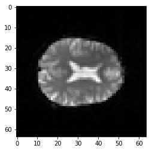
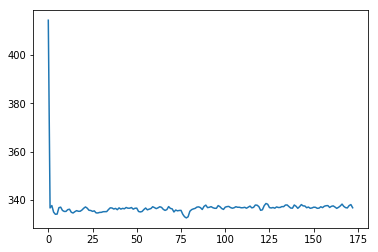
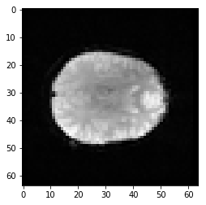
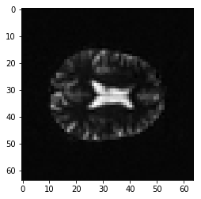

Four dimensional images
For this notebook you will need:
# Our usual set-up
import numpy as np
import matplotlib.pyplot as plt
%matplotlib inline
# Set 'gray' as the default colormap
plt.rcParams['image.cmap'] = 'gray'
# Display array values to 4 digits of precision
np.set_printoptions(precision=4, suppress=True)
We now leave our three-dimensional comfort zone.
Images can also be four-dimensional. It’s easiest to think of four dimensional images as a stack of 3-dimensional images (volumes).
Here we load a four dimensional image. It is an functional MRI image, where the volumes are collected in sequence a few seconds apart.
import nibabel as nib
img = nib.load('ds114_sub009_t2r1.nii')
data = img.get_data()
The image we have just loaded is a four-dimensional image, with a four-dimensional array:
data.shape
(64, 64, 30, 173)
The first three axes represent three dimensional space. The last axis represents time. Here the last (time) axis has length 173. This means that, for each of these 173 elements, there is one whole three dimensional image. We often call the three-dimensional images volumes. So we could say that this 4D image contains 173 volumes.
We have previously been taking slices over the third axis of a three-dimensional image. We can now take slices over the fourth axis of this four-dimensional image:
first_vol = data[:, :, :, 0] # A slice over the final (time) axis
This slice selects the first three-dimensional volume (3D image) from the 4D array:
first_vol.shape
(64, 64, 30)
first_vol is a 3D image just like the 3D images you have already seen:
# A slice over the third dimension of a 3D image
plt.imshow(first_vol[:, :, 14])
<matplotlib.image.AxesImage at 0x11327f4e0>

We can now start to look at how the signal changes over time. To begin, we do something very simple, which is to take the mean of all the voxel values in each 3D scan:
means = []
n_vols = data.shape[-1] # The length of the last axis
for i in range(n_vols):
this_vol = data[:, :, :, i]
mean = np.mean(this_vol) # Mean across all voxels
means.append(mean)
plt.plot(means)
[<matplotlib.lines.Line2D at 0x1133caa20>]

Ouch - the first scan has a much higher mean than the others. Why?
plt.imshow(first_vol[:, :, 14])
<matplotlib.image.AxesImage at 0x113432898>
second_vol = data[:, :, :, 1]
plt.imshow(second_vol[:, :, 14])
<matplotlib.image.AxesImage at 0x1134f14a8>

vol_diff = first_vol - second_vol
plt.imshow(vol_diff[:, :, 14])
<matplotlib.image.AxesImage at 0x1135a4cf8>
